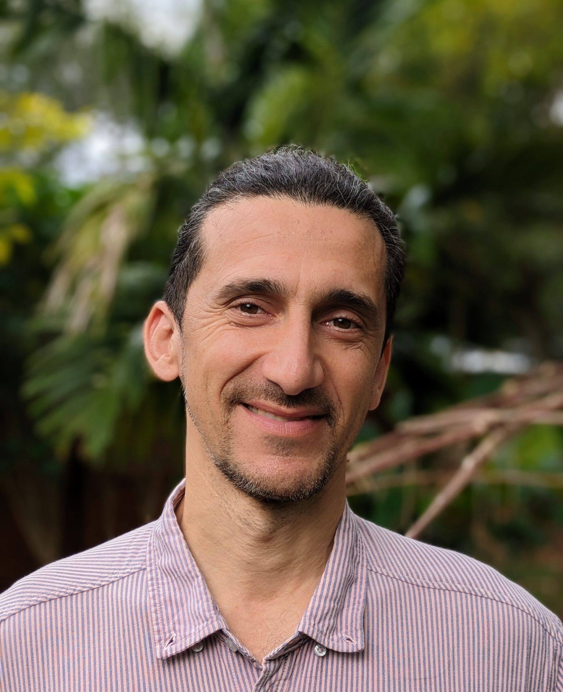

Who I Am
I am a psychologist, a medicine man, and a vision quester. For over twenty years I have dedicated my life to individual and collective transformation, working at the intersection of modern organizational psychology and the ancient wisdom of Sumak Kawsay, the art of living well.
I trained at Sapienza University in Rome, then spent years working in Latin America with communities navigating trauma and systemic breakdown. I studied under medicine people and have guided sacred rituals across Europe and the Americas for two decades.
I co-founded Fuoco Sacro in Italy and Sumak Kawsay Iglesia del Buen Vivir in Florida, both dedicated to preserving and sharing the wisdom of indigenous traditions.
I also co-founded FINO with my wife Anna, bringing Self-leadership into organizations and leadership teams.
I speak English, Spanish, Italian, and Portuguese.